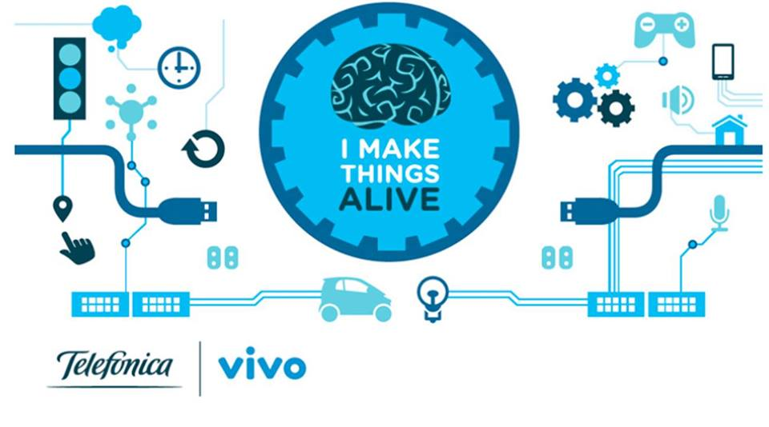
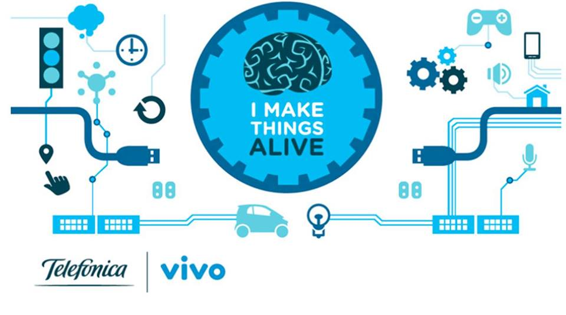

Internet of "Little" Things Ciência para crianças
Internet of "Little" Things Ciência para crianças
Internet of "Little Things"
Internet of "Little Things", ou Internet das "Coisinhas", é um projeto desenvolvido com intuito de popularizar o acesso a metódos científicos através do uso da plataforma DCA da Telefônica para IoT disponibilizando ferramentas para aquisição de dados em pequenos experimentos científicos.